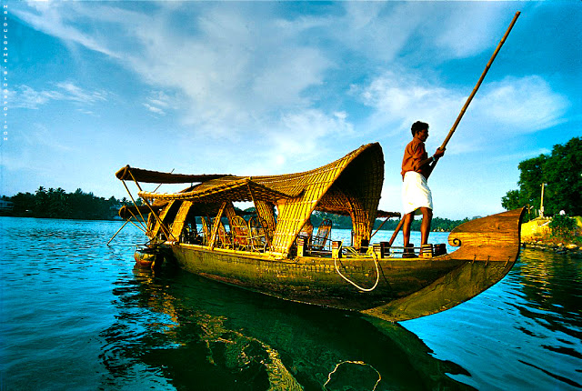
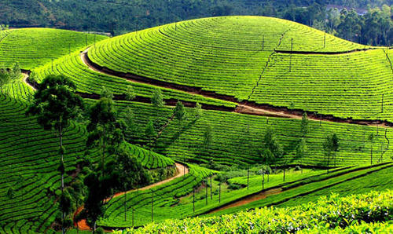
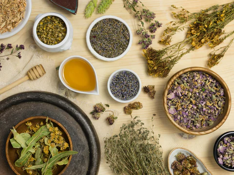
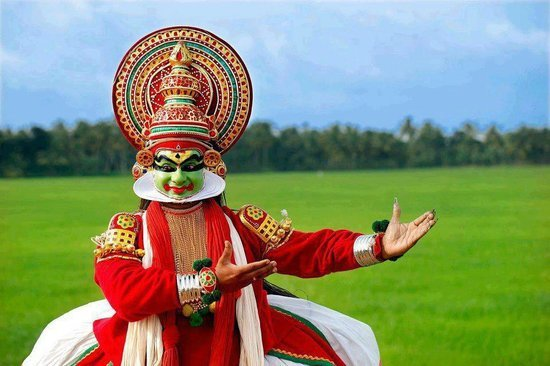

Kerala In A Glimpse
Popularly known as "God's Own Country", Kerala is one of the most sought after tourist destinations in the world. This exotic land is renowned for its rich cultural heritage, tropical climate, palm fringed beaches, misty hill stations, health resorts, wild life sanctuaries, enchanting art forms, grand festivals and, the serenity of the backwaters and the emerald blue Arabian Sea which promise an unforgettable holidaying experience to travellers. According to "National Geographic Travel", the leading travel Magazine, Kerala is one of the 50 must see destinations of a lifetime and one of the 10 paradises of the World.
Kerala is a popular destination for both domestic as well as foreign tourists. Kerala is well known for its beaches, backwaters in Alappuzha and Kollam, mountain ranges and wildlife sanctuaries. Other popular attractions in the state include the beaches at Kovalam, Muzhappilangad, Bekal and Kappad; backwater tourism and lake resorts around Ashtamudi Lake, Kollam; hill stations and resorts at Munnar, Wayanad, Nelliampathi, Vagamon and Ponmudi; and national parks and wildlife sanctuaries at Wayanad, Periyar, Parambikulam, Silent Valley National Park and Eravikulam National Park. The "backwaters" region—an extensive network of interlocking rivers, lakes, and canals that centre on Vembanad Lake, also see heavy tourist traffic. Heritage sites, such as the Padmanabhapuram Palace, Hill Palace, and Mattancherry Palace, are also visited. To further promote tourism in Kerala, the Grand Kerala Shopping Festival was started by the Government of Kerala in 2007.[6] Since then it has been held every year during the December–January period.
Beaches
Flanked on the western coast by the Arabian Sea, Kerala one of the long coastline of 580 km (360 mi); all of which is virtually dotted with sandy beaches.
Boating at Biyyam Lake near Ponnani
Kovalam beach near Thiruvananthapuram was among the first beaches in Kerala to attract tourists. Rediscovered by back-packers and tan-seekers in the 1960s and followed by hordes of hippies in the 1970s, Kovalam is today the most visited beaches in the state.
Other popularly visited beaches in the state include those at Kappad, Alappuzha, Kozhikode[16] Beach, Marari Beach (Mararikulam, Alappuzha), Nattika (Thrissur), Vadanappilly beach (Thrissur), Cherai Beach, Ponnani beach, Bekal, Kappad Beypore beach, Marari beach, Fort Kochi, and Varkala. The Muzhappilangad Beach at Kannur and Thikkodi Beach at Kozhikode are the only two drive-in beach in India. Marari beach was rated as one of the world's top five Hammock Beaches by the National Geographic survey and has been cited[17] in the international press. Payambalam beach is one of the most beautiful beach in Kerala situated in Kannur. Other beaches in Kannur include Baby beach, Meenkunnu Beach, Azhikode Beach, Madaiparra Beach, Chootath Beach, Mermaid Beach

Backwaters
The backwaters in Kerala are a chain of brackish lagoons and lakes lying parallel to the Arabian Sea coast (known as the Malabar Coast). Houseboat or Kettuvallam rides in backwaters are a major tourist attraction in kerala. Backwater tourism is centered mostly around[18] of Kerala like Alleppey, Kumarakom, Ashtamudi Lake, Kollam, Ponnani, Kavvayi Backwaters, and Bekal. Boat races held during festival seasons are also a major tourist attraction in the backwater regions.
The backwater network includes large lakes such as the Ashtamudi Lake, the largest among them, linked by 1500 km of canals, both man-made and natural and fed by several rivers, and extending virtually the entire length of Kerala state. The backwaters were formed by the action of waves and shore currents creating low barrier islands across the mouths of the many rivers flowing down from the Western Ghats range.
Backwaters in Kerala for honeymoon and family holidays are quite popular. You may sort some of the best Kerala backwaters tour packages after reading about Kerala backwaters' reviews available on various websites

Hill-Stations
Eastern Kerala consists of land encroached upon by the Western Ghats; the region thus includes high mountains, gorges, and deep-cut valleys. The wildest lands are covered with dense forests, while other regions lie under tea and coffee plantations (established mainly in the 19th and 20th centuries) or other forms of cultivation.
The Western Ghats rise an average to 1500 m elevation above sea level. Some of the popular hill stations in the region are Munnar, Vagamon, Paithalmala, Wayanad, Nelliyampathi, Nilambur, Elapeedika, Peermade, Thekkady and Ponmudi.
Kurumbalakotta Hill in Wayand is becoming a great tourist attraction now.

Ayurveda
Medical tourism, promoted by traditional systems of medicine like Ayurveda and Siddha, is widely popular in the state, and draws increasing numbers of tourists. A combination of many factors has led to the increase in popularity of medical tourism: high costs of healthcare in industrialised nations, ease and affordability of international travel, improving technology and standards of care.
However, the rampant recent growth in this sector has made the government apprehensive. The government is now considering the introduction of a grading system that would grade hospitals and clinics, thus helping tourists in selecting one for their treatments.

Culture
Kerala's culture is mainly Hindu in origin, deriving from a greater Tamil-heritage region known as Tamilakam. Later, Kerala's culture was elaborated on through centuries of contact with overseas cultures.[25] Native performing arts include koodiyattom, kathakali—from katha ("story") and kali ("play")—and its offshoot Kerala Natanam, koothu (akin to stand-up comedy), mohiniaattam ("dance of the enchantress"), thullal, padayani, thirayattam, and theyyam. Other arts are more religion- and tribal-themed. These include chavittu nadakom, oppana (originally from Malabar), which combines dance, rhythmic hand clapping, and ishal vocalisations.
